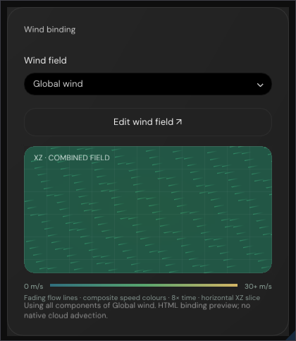
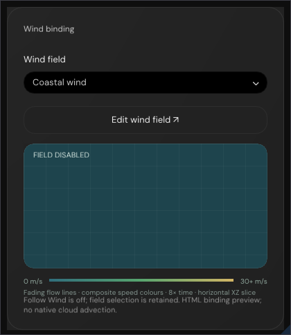
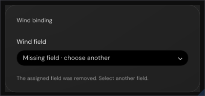
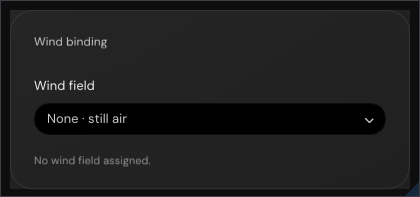
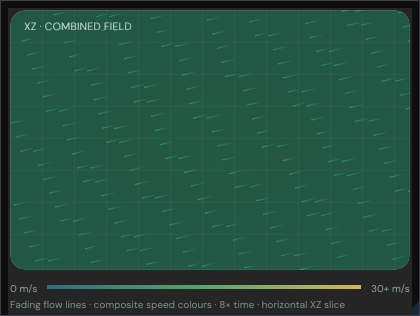
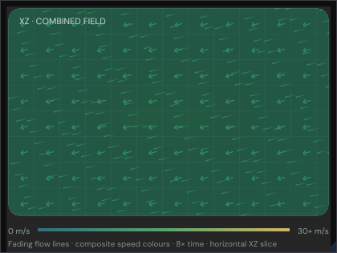
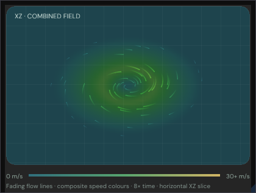
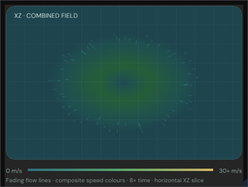
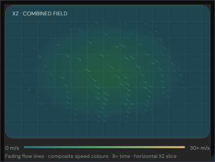
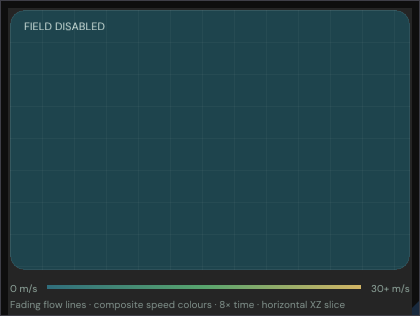

WindPanel.jsx's WindBinding card and its WindCanvas composite flow
field, converted into Engine/Editor/WindPanelSurface.h and mounted in both the fog and the
clouds inspectors. Every capture below is real ImGui draw output, rasterised on the CPU — no screenshots
and no mock-ups.
The browser shipped this as a card; natively it was a bare checkbox and combo box
(WindBindingControls.h). The authoring model — ResolveWind's clamps and fallback
pair, and EvaluateWind's four component kinds — is reproduced term for term, and the 77 checks
assert the arithmetic rather than the pixels.

What the fog and clouds panels actually render. Native Wind Source entry 0 is the shared Global wind, so the select always names a field — the browser's still-air blank never arises from that sheet.
The card as the browser ships it: the field select, the editor shortcut, the live composite preview with its speed legend, and the binding note naming the bound field.

Switching Follow Wind off stops the preview and swaps the note, exactly as WindBinding does. The field selection is retained rather than cleared.

A stored field id that no longer resolves offers “Missing field · choose another” and drops the preview and the shortcut.

No field assigned: the select reads “None · still air” and the card collapses to its select and one line of note.

ResolveWind's fallback pair — a 7 m/s prevailing wind at 250° plus a 1.75 m/s passing gust on a 450 m radius, pulsing at 0.3 Hz.

The optional arrow lattice on 32 px centres. Arrows run west-south-west, which is where a 250° bearing blows.

The vortex branch: tangential flow with a fixed 0.18 inward lean, a still eye, and the core ramp softening the centre.

The radial branch blowing straight outward from its centre, falling off as (1 − r²)² to nothing at the radius.

A single 18 m/s gust at 135° on a 420 m radius, caught mid-pulse between its 0.65 and 1.0 envelope.

A disabled field samples to zero everywhere: flat teal, no strokes, and the in-canvas stamp reads FIELD DISABLED.